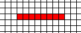
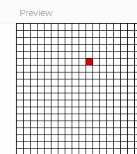
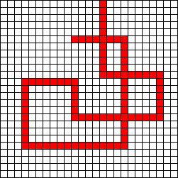
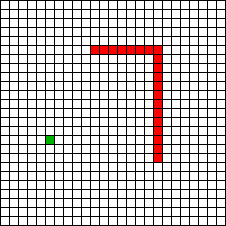

We've been working a lot with arrays and using square bracket notation to interact with their individual locations, but arrays are objects that have other functions to help manipulate them. We'll look at two core functions today:
- push() : Meant to get values into the array easily, this function makes the array one index larger and fills the new location with its new value.
- splice(): Meant to remove values from an array, this function deletes the index from the array entirely. The location will then be filled by all of the higher index location shifting down to fill the gap. Overall the array's length is shortened.
Both of these functions affect the size of the array as they add and remove values. This will be useful today as we design a Snake game, in which the snake moves by removing a square from its tail and adds one to its head.

The first thing we're going to need is a basic grid setup with the ability to move around our canvas.
Open the Snake workspace in CodeHS, where you should be met with a small amount of starter code:
function setup() {
createCanvas(401, 401);
}
function draw() {
background(255);
drawGrid();
}
function drawGrid() {
}
I've added a call to the drawGrid function during the draw method, and the outline of the function below. The purpose of this one is to draw the grid that the snake will live in. Write a loop that will fill the canvas with empty cells using either line or rect. Each cell in Mr. Sacco's grid is 10x10, but you may choose larger if you would like.
When you run your code, you should see the empty grid sitting there.
The snake game's graphics are very simple. The snake is a bunch of filled in cells and the food is a filled in cell. To make our lives easier, let's add a utility function to make drawing a cell easier:
Replace your draw function with this one:
function draw() {
background(255);
drawGrid();
fill(222,0,0);
drawCell(5,10); //temporary code
}
function drawCell(row,col){
}
This new draw function is trying to draw the cell at row 5, column 10 by calling drawCell(5,10), but the funciton doesn't do anything right now.
Your task is to write the drawCell function so that it calls rect to make the correct cell be filled. The row and col parameters should be used to determine the x and y of the cell to be drawn. Make sure that the drawCell function uses the row and col parameters and not just assume row 5 col 10.
When you test your sketch a single red cell should be filled in.

It should be at row:5, column: 10. Try changing the temporary code to pass different locations and make sure that the correct cells are highlighted.
We'll break the snake down into two parts: the head and the body. The head of the snake represents its most up to date position. When we want to move the snake, we are changing the location of the snake's head.
Now that we can easily draw each cell using the drawCell function, we no longer have to worry about x's and y's. We only need to care about rows and columns. Add two global variables to the snake class named headRow, and headCol and give them a starting value of 10 and 10. This will be the starting location for the snake.
Drawing the Snake
Again, change your draw function and add the new drawSnakeHead function that's being called.
function draw() {
background(255);
drawGrid();
drawSnakeHead();
}
function drawSnakeHead(){
}
The purpose of the drawSnakeHead function is to draw the cell that is represented by our headRow and headCol variables. You can pick whichever fill you would like, and then call the drawCell function.
Running this should cause the cell at (10,10) to be filled. This is the beginning of our snake. We can now start to bring it to life.
Though the snake won't grow quite yet, we can still make it move around and tie it to the keyboard.
A key feature of the snake game is that the snake is always moving in one direction. This is something that we need to keep track of, so add a global variable named snakeDir to your sketch.
var snakeDir;
The snakeDir variable is there to tell us which direction that we're heading. To keep is simple, let's decide to use Strings to help us determine which direction we're going. In the setup function, assign "RIGHT" to it. This should imply that our starting direction is right. This means nothing until we actually simulate the movement.
function draw() {
background(255);
drawGrid();
drawSnakeHead();
moveSnake();
}
function moveSnake() {
}
The moveSnake's function is to change where the snake is by changing the value of snakeRow or snakeCol by 1, causing it to move to the very next cell. Write a series of if statements that will look at the snakeDir variable for "UP", "DOWN", "LEFT", or "RIGHT" and make the change to one of the variables. Do not try to draw anything during this function. The snake is drawn depending on the data, change the data and change where it will be drawn.
Run your sketch and hopefully the snake will go off the right side of your canvas at a very rapid pace. This is due to the frame rate being 60 ish. In the setup function, change the frameRate to be something that is more your pace, like 15 or 20. Whatever makes you happy.
Now is a good time to run your sketch and see if starting the snakeDir variable at "DOWN', "LEFT", and "RIGHT" will cause it to move in the correct direction.
We've spent some time creating a situation where the entire movement of the snake is based on the snakeDir variable's content. It's time to tie that to the keyboard. Add a keyPressed() function that will look for the keyCodes UP_ARROW, DOWN_ARROW, LEFT_ARROW, and RIGHT_ARROW and change snakeDir to be the matching Strings "UP","DOWN","LEFT", or "RIGHT".
Test out your sketch to see if your new keyboard controls work. You should have complete control of where the snake head goes. Don't forget to click the canvas first so that it is listening to you. You may optionally change the draw function so that it only moves the snake after the program's been running for a few frames.
if (frameCount > 15) moveSnake();
This might give you some time to click the canvas before losing your snake.
Though your Snake doesn't grow yet, paste your sketch below.
This is not a Snake game until you have the body trailing behind it. The body is essentially a 'history' of the last X snake head locations. Since we are going to have a lot of body segments, we'll use arrays to represent this.
Add two new global variables named bodyRows and bodyCols. The point of these is similar to the xs and ys arrays that we've used in the past. They are parallel arrays where each index in rows has a corresponding index in cols, and you have to take them at the same time to make them relevant.
For the game the snake will start out with no body, but for the sake of coding we'll start with four body segments. Add the following to your setup function:
bodyRows = [2,2,2,3]; //Temporary starter body bodyCols = [1,2,3,3]; //Temporary starter body
These four rows and columns represent the tetris shape below:
Update your draw function again and add the drawSnakeBody function.
function draw() {
background(255);
drawGrid();
drawSnakeBody();
drawSnakeHead();
moveSnake();
}
function drawSnakeBody(){
}
The purpose of this function will be to draw every cell defined by the bodyRows and bodyCols variables. This is made easier because we have the drawCell function. Write a loop that will access each index of bodyRows and bodyCols and call drawCell with them as parameters.
When you have finished, run your program and hopefully you will see the four predetermined body locations filled. Don't worry right now that they are not related to the snake's head, which will still run around like it's programmed to do.
At this point you know that the drawSnakeBody function works. You can modify the setup function to remove the starting body segments.
bodyRows = []; bodyCols = [];
Now that we can independently draw the snake body, it's now time to relate it to where the snake head has been. If you think about it. Every time the snake 'moves', its current location becomes a part of its body. We can simulate this by going to the moveSnake() function. In the very beginning, before you've changed the values of headRow and headCol, push them to their respective arrays
//Add the head to the body arrays before it gets replaced
bodyRows.push(headRow);
bodyCols.push(headCol);
Up until now, we've mostly interacted with arrays using square-bracket notation, but they are objects with helpful functions. An array's push() function is an easy way to get values into the array. Whatever is passed in to the parameter will be automatically assigned to the next available location at the end of the array. No need to worry about the index.

Now that every head location is being pushed to the body automatically, running your program should cause the snake's body to grow and grow as it moves. It's not quite a snake yet, but every locations that you come across with become a part of the body.
We want our snake to have a limit to how large it gets. Add a global variable named snakeLen and assign it to a starting value of 10. This will be the initial size of the snake, but it will need the ability to grow.
The new snakeLen variable is important during our moveSnake function, which is constantly pushing new values to the bodyRows and bodyCols arrays. We want to remove values from the bodyRows and bodyCols once they grow larger than the snakeLen. At the end of the moveSnake function, add an if statement that will compare the length of bodyRows with the snakeLen and splice out the value from the beginning of the array to keep it small enough. We remove from the beginning of the array (index 0) because that's where the oldest body parts are.
if( bodyRows.length > snakeLen){
bodyRows.splice(0,1);
bodyCols.splice(0,1);
}
Just as the push() function is useful for expanding the array with new values, splice() is about removing values from the list. As parameters it accepts an index, and a number of values to be removed, so:
bodyRows.splice(0,1);
is removing 1 value at index 0.
Run your sketch now and you should see a more familiar snake that doesn't grow infinitely.

Now that we have a global variable in charge of our snake's length, we need to increase the length when appropriate. The other element on the snake screen is the food, a single cell that the snake wants to eat and increase the score.
Add two global variables to represent the row and the columns of the food to draw.
In the setup function, assing a random row and column to the foodRow and foodCol variable.
- Make sure you know how many rows and columns your grid has. Don't use the width/height in your random calculation
- Don't forget to floor your random numbers. We need a integer to represent the row and column.
Modify your draw function to call the drawFood function, and add the new function.
function draw() {
background(255);
drawGrid();
drawSnakeBody();
drawSnakeHead();
drawFood();
moveSnake();
}
function drawFood(){
}
Implement drawFood so that is picks a color to fill and then calls drawCell with the new global variables.
Run your sketch a few times. Each time the food should appear at a different location.
Update draw() one more time:
function draw() {
background(255);
drawGrid();
drawSnakeBody();
drawSnakeHead();
drawFood();
moveSnake();
if( headOverlapsFood() ){
growSnake();
newFoodLocation();
}
}
//Compares the headRow,headCol to the foodRow and foodCol
//Goal: return true or return false
function headOverlapsFood(){
}
//Makes the snake 'grow' by increasing the global snake length variable
function growSnake(){
}
//randomizes the location of the food.
function newFoodLocation(){
}
There are two functions here that work together. Notice how the headOverlapsFood function being used to run an if statement in the draw function. Its purpose is to look at the data and tell us if the head is overlapping the food. It should return true if they overlap and false if they don't. At no point should this function change any data or try to draw anything, that's reaching beyond its purpose.
The growSnake function is the response to head overlapping with the food. We want the snake to grow, which only means changing the global snake length to be larger. At no point should it modify the array or try to return anything. We've designed it so that the arrays will naturally grow larger when the variable is increased.
Once the food is eaten, it needs to be placed somewhere else on the grid. The newFoodLocation's purpose is to randomise the row and column of the food, which you've already done in the constructor. Theoretically you can copy-paste your randomization statements from the setup into this function and it will work.
Testing all Three:
Hopefully we've completed these functions appropriately. Test your sketch by running it and guiding the snake to the food. When you overlap, it should respond by making the snake longer (If you start the snake very small, this growth will be obvious) and the food should appear somewhere else on the grid.
It should return true if they overlap and false if they don't.
We lose the game when the snake overlaps with its own body. Update your sketch again:
function draw() {
background(255);
drawGrid();
drawSnakeBody();
drawSnakeHead();
drawFood();
moveSnake();
if( headOverlapsFood() ){
growSnake();
newFoodLocation();
}
if( bodyOverlaps(headRow,headCol) ){
console.log("OVERLAP!");
noLoop(); //Stops draw function from iterating
}
}
//returns true if any part of the snake body has the same row and column as the parameters
function bodyOverlaps(row,col){
return false;
}
In the draw function we have added a call to bodyOverlaps and passed in a row and column as parameters. The result is that noLoop is called, which will stop the draw function from looping.
if( bodyOverlaps(headRow,headCol) ){
console.log("OVERLAP!");
noLoop(); //Stops draw function from iterating
}
bodyOverlaps is another function whose purpose is to produce a true or false value to run an if statement, but it's more challenging than simply checking the head vs the food. This time, instead of just headRow and headCol, we need to loop through every single location in bodyRows and bodyCols. If any index has a matching row and column, return true.
Note: Don't return false during the loop!!!!! Leave it until the end
The bodyOverlaps function that you've been given automatically returns false at the end. This means that we are assuming that it's going to be false. Your loop's purpose is only to look for reasons to return true and only return false after reaching the end of the loop.
The logic is that you are going to be checking one index at a time. Unlike returning true, you cannot determine if false (no overlap at all) should be returned by looking at just one index. The only time that we should return false is if we've already checked every single index and we didn't find an opportunity to return true. Placing the return false at the end of the function gives the loop every chance it can to return true and preventing the function from finishing before finally deciding to run false.
Test this by running your program and trying to run the snake over itself and cause the game to stop.
Another way to lose is by going out of bounds. Modify the if statement in the draw function to make us lose if we go out of bounds, determined by the new snakeInBounds function.
if( bodyOverlaps(headRow,headCol) || !snakeInBounds()){
noLoop(); //Stops draw function from iterating
}
To get this working, add the snakeInBounds function to your project. Its purpose is to return true if the snake's head is within the grid. This means that you need to check the head's row and column and return true only if they are in bounds. This means that the row should be positive and less than the number of rows, and the column should be positive and less than the number of columns. This can be done in one big, four part AND statement. Don't forget that this function's purpose is to return true or false, not to do any drawing or changing of data.
Test your program again and run the snake into all four walls. Each time you hit a wall it should cause the game to stop.
Once the game is over, resetting it would be the next step. Modify the keypressed function to detect a press of "r" (or whatever key you want). When it's pressed we need to start the game over. This means reinitializing all the variables to their starting position. This is likely going to involve some copy-paste as you reset the snake's head, body, and food.
Since we're stopping the clock using the noLoop() function, your reset should kick it back into gear by saying loop(); (setting the frameRate to non-zero has a similar result).
Test out your game to make sure that your snake grows when it overlaps with the food and stops when it overlaps with itself or goes out of bounds. If so, paste your code below.